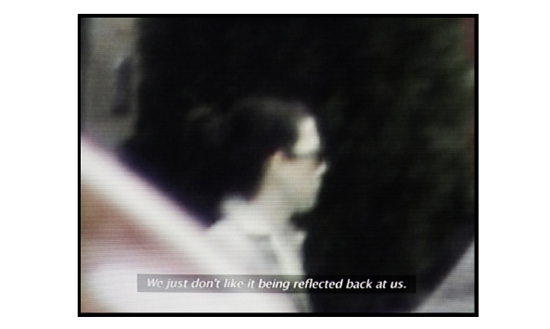
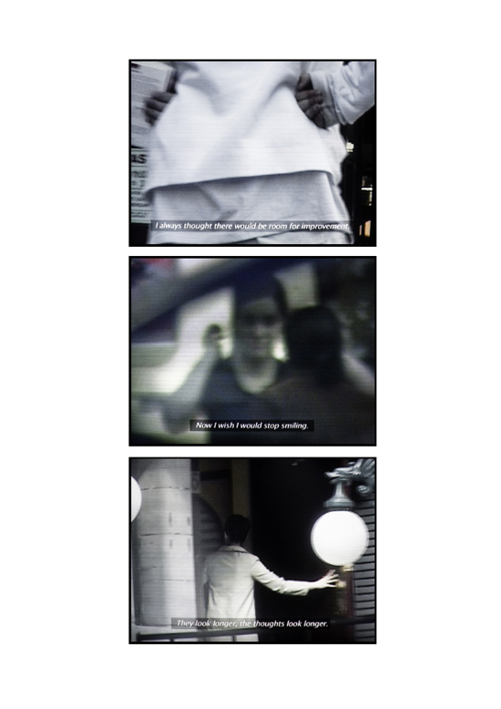
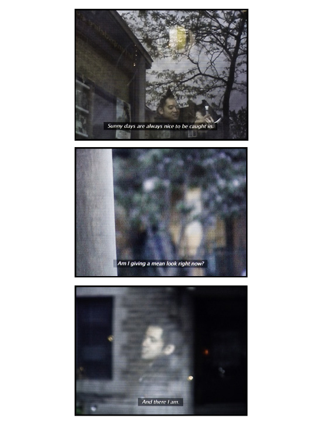

[...] These stories are central to Høst’s third piece in the exhibition, Private Eye, which is a series of stills from the documentation made by the private investigator of The Detective. Text from the audio interviews
is superimposed on candid images, creating another interpretation of subjecthood and objecthood. Instead of pairing the image and text of a single person, Høst has mixed these, showing the text of one person with the image of another. The artist seeks to create narrative, to push the limits of documentation and the perceived truth in such. Her intention is to augment the paradox of knowing oneself as an object.
“There is no objective truth to be found in a short glimpse in the mirror or the documentary image, we know that, but the longing for it keeps lingering on. The longing for a unifying objective truth – pulling
us into the same universe and out of our subjectivity. The title of the exhibition reflects on this by pointing out the part of the eye that is blind. There are areas not covered – they just seem to be.” – Katja Høst
From the exhibition folder for Blind spot, at Gallery 44 in Toronto, written by Melissa Bennet.
|    |